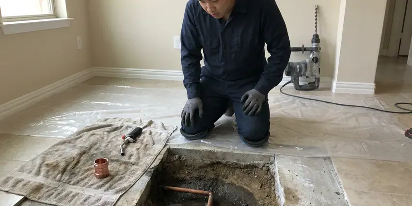

Water Leak Repair in Westminster, CO
High water bill or a damp spot you cannot explain? GFR Plumbing finds and repairs water leaks in Westminster, CO with minimal digging or drywall removal.
- Licensed & Insured
- Expert Pipe Repair
- Foundation Protection
- Slab Leak Experts

Get Dependable Water Leak Solutions in Westminster, CO.
Our experienced plumbers are ready to address any water leak, big or small, protecting your property from damage.
Professional Water Leak Repair Services for Westminster, CO Homes
GFR Plumbing understands the urgency of water leaks in any Westminster, CO home. From dripping faucets to hidden pipe bursts, our team pinpoints the problem and provides durable repairs to protect your property.
Our expertise includes:
- Modern Electronic Leak Detection
- Copper, PEX, CPVC and polybutylene section repairs and reroutes
- PEX, Copper, PVC Pipe Repair

Additional Plumbing Repair Services in Westminster, CO
We offer expert plumbing repair services across Westminster, CO to stop leaks, clear blockages, and keep every fixture working the way it should.


Customers
Why Choose GFR Plumbing for Water Leak Repair in Westminster, CO?
When you have a water leak, fast action is essential to prevent costly water damage and mold growth. Our team is committed to providing fast and effective solutions.
- Precise Detection, Professional leak detection equipment narrows the leak to a small area before any opening is made.
- Skilled Technicians, Our plumbers are highly trained and experienced in diagnosing and repairing all types of water leaks, using modern tools.
- Lasting Repairs, We use durable, code-compliant materials and techniques to make sure your water leak repair stands the test of time.
Citywide Coverage
No matter where you are in Westminster, GFR Plumbing is ready to provide expert water leak repair services. We dispatch our plumbers efficiently across the entire metro area, ensuring timely and effective solutions for all our neighbors.
Experienced Team
Each GFR Plumbing technician is a skilled professional, equipped with the knowledge and tools to reliably diagnose and fix any water leak. Their expertise means that whether it's a pinhole leak in a copper pipe or a burst PEX line, the repair is done right the first time.
Safety-First Approach
When leaks have soaked drywall or insulation, we point out mold risk and drying needs. We also shut off and restore water carefully to avoid pressure surges that cause new leaks.
Trusted Certified Westminster Plumbing Services Professionals
At GFR Plumbing, we take pride in providing licensed, certified plumbing services throughout Westminster, CO. Backed by recognized industry credentials, our experienced plumbers combine technical skill with genuine customer care. Whether it is repair, installation, or maintenance, we follow strict safety and quality standards to deliver long-lasting results you can trust.
Call Us Now PHCC Plumbing Contractor Recognition
PHCC Plumbing Contractor Recognition Better Business Bureau (BBB) Accreditation
Better Business Bureau (BBB) Accreditation Angi Certified Pro
Angi Certified Pro ISO 9001 Quality Management Certification
ISO 9001 Quality Management CertificationDependable Water Leak Repair Services in Westminster, CO
Underground Water Line Repair in Westminster, CO
Leaks in underground water lines can be difficult to detect and repair, often signaled by sudden drops in water pressure or unusually wet spots in your yard. GFR Plumbing uses advanced trenchless technologies like pipe bursting or pipe lining where feasible, to minimize yard disruption. For more severe damage, traditional excavation is performed with precision. We repair PVC, galvanized, and copper service lines, providing a robust and long-lasting connection to your Westminster home's main water supply.

Fixture Leak Repair in Westminster
Leaky faucets, toilets, and showers might seem minor, but they waste significant water and can lead to higher utility bills and mold growth. We repair or replace faulty washers, gaskets, O-rings, and cartridges in all major brands, including Moen, Delta, Kohler, and American Standard. Our plumbers ensure proper sealing and function, stopping the drips and restoring efficient water usage throughout your Westminster home. We also check for correct water pressure settings.
Leak Repair Cost Comparison in Westminster, CO
Fixture and supply line leaks typically cost $150 to $400 to repair. Leak detection typically runs $200 to $500, and in-wall repairs often fall between $300 and $900 before drywall patching. Slab and yard line repairs usually range from $1,000 to $4,000 depending on depth and method. We give you each option in writing so you can decide.
Fixture and Supply Line Leak Repair in Westminster, CO
Many leaks are at faucets, toilets, angle stops and braided supply lines. These small drips can rot cabinet floors and waste hundreds of gallons. We replace worn cartridges, flappers, fill valves, shutoff valves and supply lines. Replacing old plastic supply lines with braided stainless is a cheap way to prevent a flood.
Commercial Water Leak Repair in Westminster, CO
Water leaks in commercial properties in Westminster, CO can lead to business interruptions, inventory damage, and potential health hazards. GFR Plumbing provides comprehensive water leak repair services for businesses, retail spaces, and industrial facilities. We understand the need for quick, efficient service to minimize downtime. Our plumbers are equipped to handle larger-scale systems and complex plumbing layouts, ensuring your business operations continue smoothly with minimal disruption.
Commercial Water Leak Services in Westminster
Water leaks in commercial properties in Westminster can disrupt business operations, lead to costly downtime, and create unsafe conditions. GFR Plumbing provides specialized commercial water leak detection and repair services for businesses, offices, and industrial facilities. Our plumbers are equipped to handle larger-scale plumbing systems, complex pipe networks, and high-pressure lines. We work quickly to minimize impact on your business, ensuring compliance with commercial building codes and industry standards while protecting your assets from water damage.
Slab Leak Repair in Westminster
Slab leaks are frequent in homes with older concrete slab foundations and shifting soil. We use specialized electronic listening devices and thermal cameras to locate these hidden leaks under your home's foundation. Our methods include pipe re-routing or targeted slab penetration to fix the compromised copper, PEX, or galvanized pipes, minimizing damage and restoring your plumbing integrity. We also assess for possible foundation damage caused by prolonged water exposure.

Emergency Leak Repair in Westminster
A burst pipe or broken supply line can put inches of water on the floor in minutes. We answer emergency calls day and night and can walk you through shutting off your main valve. Once on site, we stop the leak and make a lasting repair. We can also refer a water mitigation company if drying is required.
Water Leak Repair Near Me in Westminster, CO
When a search for water leak repair near me is urgent, you need someone with the tools to find the leak, not just guess at it. GFR Plumbing brings professional detection equipment on every leak call. That saves time, money and repair work.
Our local presence means we understand the plumbing challenges faced by Westminster residents, from hard water issues to aging infrastructure. We are always close by, ready to provide prompt and professional service, making sure your home is protected from water damage.
GFR Plumbing at a Glance
- Fully licensed plumbing team covering Westminster, CO
- Same-day appointments and 24/7 emergency response
- Clear written estimates, no hidden fees
- 4.8-star rated by 750+ Colorado customers
Westminster Map
Westminster Information
- Population
- 114,875
- Area codes
- 720/303/970
- Service area
- Westminster and communities within 40 miles
- Nearby
- Broomfield, Arvada, Thornton, Lafayette
Rocky mountain ground makes trenching for sewer and water lines harder, and lines must be buried below the local frost depth. Effective water leak repair protects homes in Westminster, CO from the foundation shifts and stressed underground pipes that lead to slab leaks.
Expert Services
Trust our professionals for reliable GFR Plumbing solutions in Westminster, CO.
Our Specialized Plumbing Services in Westminster, CO
At GFR Plumbing, we provide a complete range of plumbing services across Westminster, CO. From leak detection to full system installations, our team ensures fast, precise, and affordable service for both residential and commercial properties. Explore our core services below:


How Our Water Leak Repair Process Works in Westminster, CO
Our leak repair process is built to find the problem quickly and fix it with as little disruption as possible.
Request a Quote
Contact us at (720) 727-9398 or fill out our online form to schedule your water leak repair service. Our customer service team will gather details about your leak and set up an appointment at your convenience.
Leak Detection
Our certified plumber arrives on time with advanced diagnostic tools to accurately locate the source of the leak. This includes using acoustic sensors or thermal cameras to find hidden leaks without unnecessary demolition.
Expert Repair
Once the leak is located, we present you with a clear, upfront estimate and discuss the best repair options. Our team then performs the necessary repairs using high-quality, durable materials and techniques that comply with all local codes.
Frequently Asked Questions About Water Leak Repair in Westminster
The cost of water leak repair in Westminster, CO can vary a great deal depending on the leak's location, severity, and the type of pipe involved. Minor repairs like a faucet washer replacement might cost $150 to $300, while a complex slab leak repair could range from $600 to $4,000 or more. We provide a detailed, upfront estimate after diagnosis.
A temporary clamp or tape can slow a leak in an emergency. Permanent repairs, especially inside walls or under slabs, should be done by a licensed plumber to avoid unseen damage.
We are experienced in repairing and working with all major brands of plumbing fixtures including Moen, Delta, Kohler, American Standard, and more. For pipes, we handle repairs for copper, PEX, PVC, CPVC, and galvanized steel, found in Colorado homes of various ages.
Common signs of a hidden water leak include unexplained spikes in your water bill, persistent sounds of running water when no fixtures are in use, visible water stains on walls or ceilings, musty odors, and soggy spots in your yard. For slab leaks, you might notice warm spots on your floor or cracks in your slab.
Typical signs of a hidden water leak include unexplained spikes in your water bill, discolored or damp spots on walls or ceilings, a persistent musty odor, the sound of running water when no fixtures are in use, or warm spots on your floor (indicating a hot water slab leak). These warning signs deserve attention.
While minor leaks like a dripping faucet might be a DIY fix, it's usually best to call a professional for most water leaks. Hidden leaks, especially in walls or under slabs, require specialized equipment for detection and proper repair to prevent further damage and ensure code compliance. Botched repairs can lead to more significant problems down the line.
We use Type L copper, Uponor and other quality PEX systems and approved fittings. We choose materials based on what is already in your home and what will hold up.
Usually only a small opening is needed because we pinpoint the leak before cutting. For slab leaks, rerouting the line through walls or the attic can avoid breaking the floor entirely.
What People Are Saying About Our Plumbing Experts?

Daniel K.
A pipe burst at 11 pm and they actually answered. The plumber showed up within the hour, shut everything down, and had us back to normal the next morning. Could not ask for more.
Emergency Plumbing · Westminster, CO
Emily R.
I called GFR Plumbing for plumbing repair, and the technician was fast, polite, and thorough. They explained the problem clearly and fixed it the same day. I will definitely hire them again. Highly recommended!
Plumbing Repair · Lafayette, CO
James P.
Our commercial plumbing system had a leak under the sink, and GFR Plumbing handled it professionally. The plumbers arrived quickly and restored everything without disruption to our customers.
Commercial Plumbing · Thornton, CORobert G.
The trenchless sewer replacement saved our front yard. They walked us through the camera inspection footage first so we knew exactly what we were paying for.
Sewer Line Replacement · Lafayette, CO
Mark T.
When our office needed drain cleaning, GFR Plumbing provided quick, reliable service. The plumber arrived on time and made sure every drain flowed perfectly before leaving. Very satisfied.
Drain Cleaning · Lafayette, CO
Sofia M.
Two new toilets installed in one visit, no mess left behind, and the tech even adjusted a faucet he noticed was dripping. Fair pricing and really friendly.
Toilet Installation · Lafayette, CO